ศาลเจ้าพ่อเขาใหญ่
ศาลเจ้าพ่อเขาใหญ่ ศาลแห่งนี้เป็นสิ่งศักดิ์สิทธิ์ที่อยู่คู่บ้านคู่เมืองบนเกาะสีชังมาอย่างช้านาน ซึ่งในปัจจุบันถือเป็นสถานที่ท่องเที่ยวที่นักท่องเที่ยวที่เดินทางมาพักผ่อนที่เกาะสีชังมักจะขึ้นมากราบไหว้สักการะขอพรกัน ณ ที่ศาลแห่งนี้ โดยในอดีตศาลแห่งนี้มีประวัติความเป็นมาที่มีมาอย่างเก่าแก่ก่อตั้งขึ้นตั้งแต่ก่อนสมัยพุทธศักราช 2426 ก่อนที่จะมีชาวจีนได้มาทำการมาจารึกไว้ที่สถานที่แห่งนี้ ที่ถือเป็นสิ่งศักดิ์สิทธิ์ที่มีความมหัศจรรย์มากๆ โดยศาลแห่งนี้ตั้งอยู่ที่เชิงเขา คยาศิระ สร้างโดยใช้สถาปัตยกรรมตามแบบศาลเจ้าจีนผสมผสานความเป็นวัดไทยได้อย่างลงตัว
 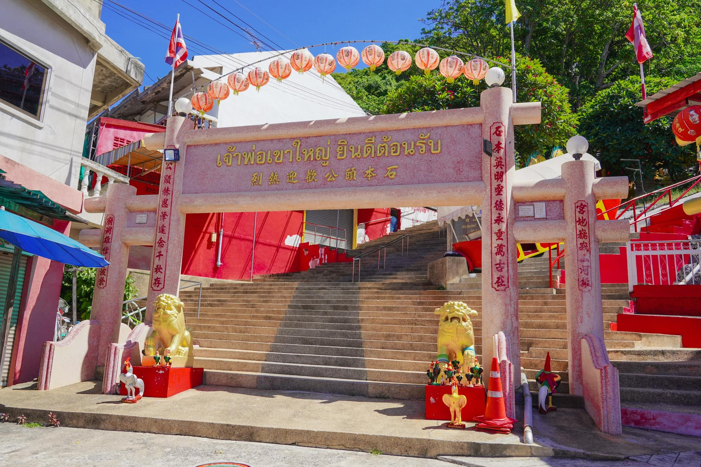
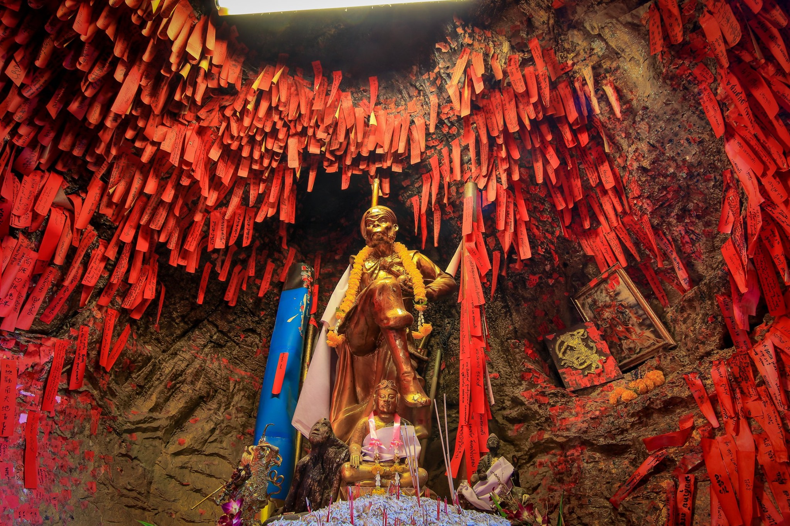
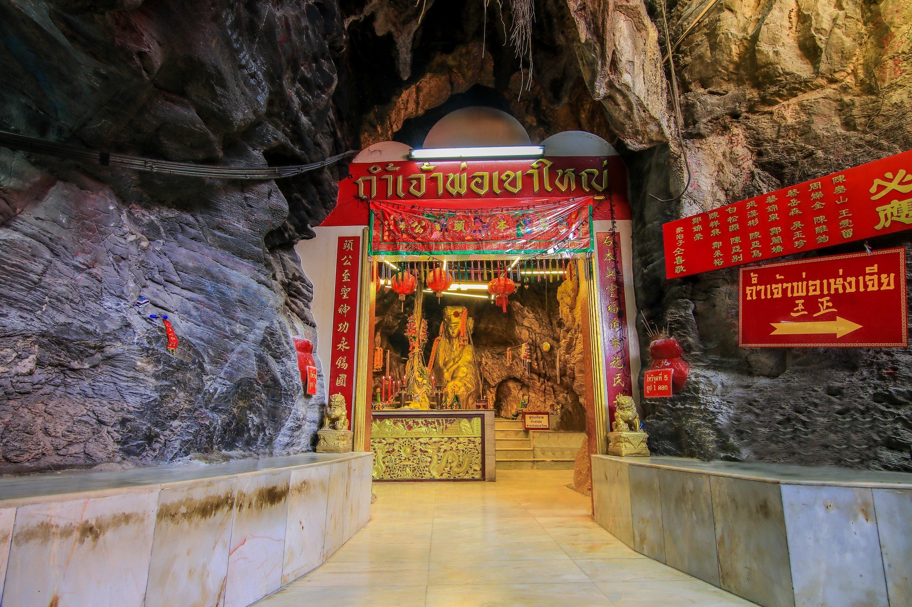
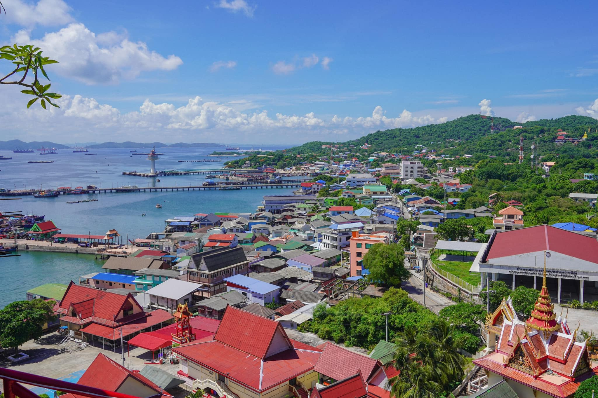
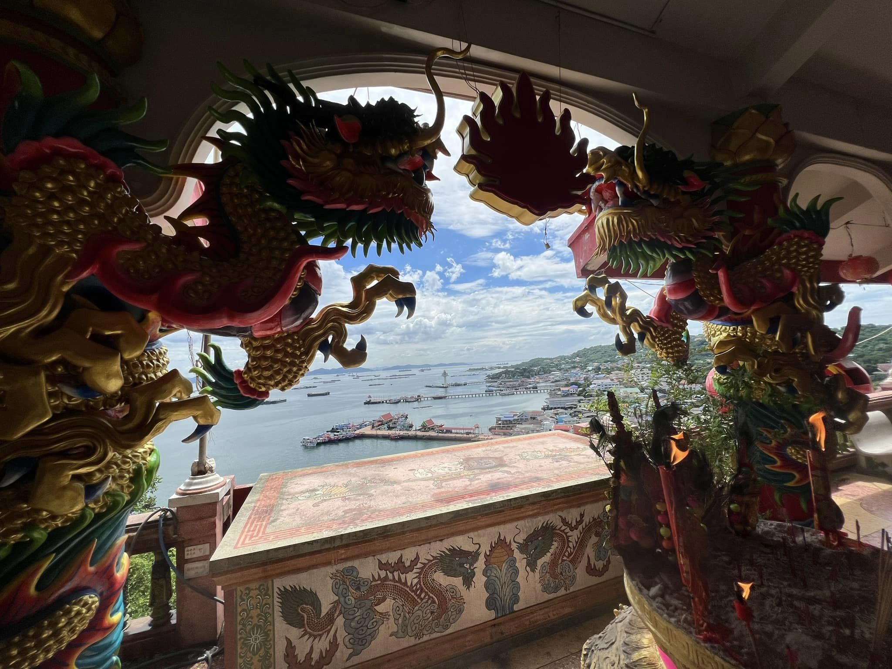
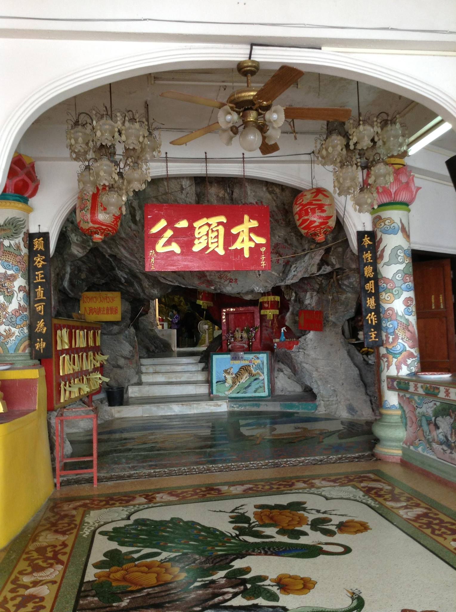
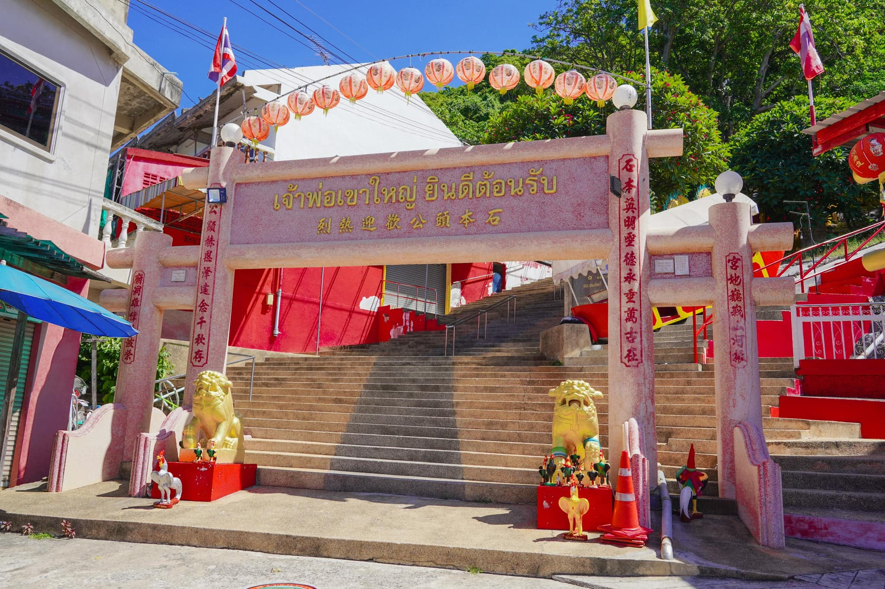
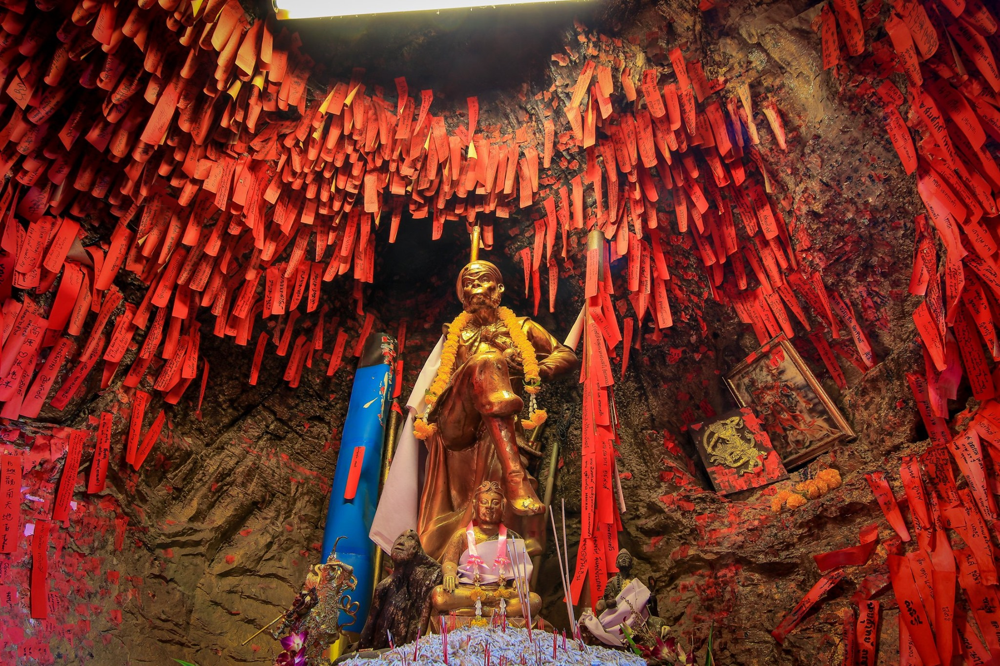
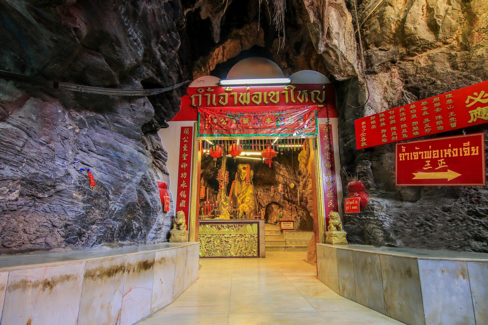
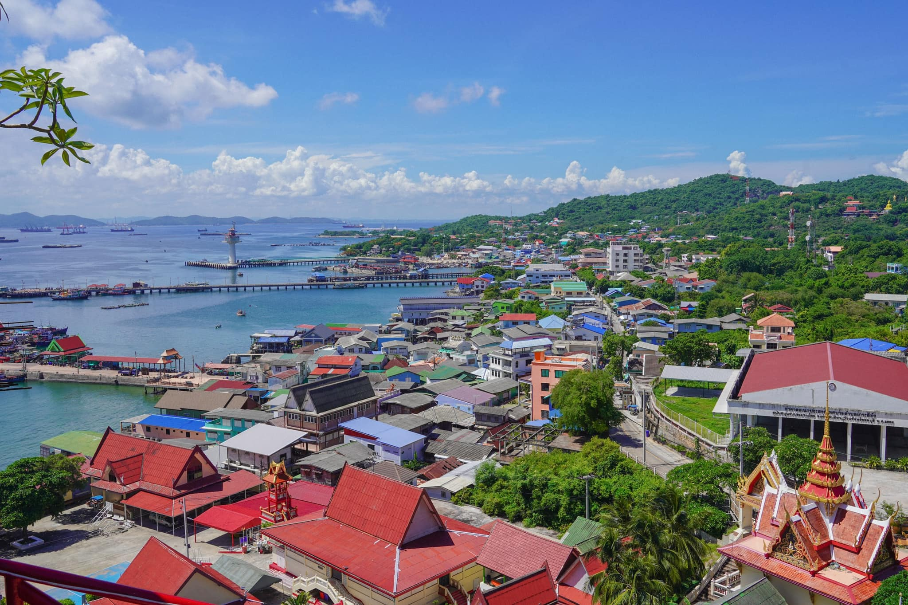
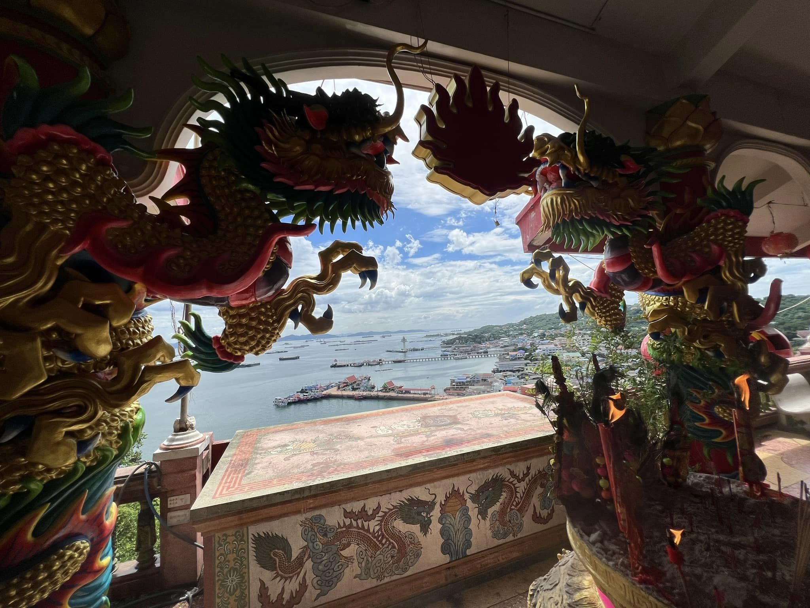
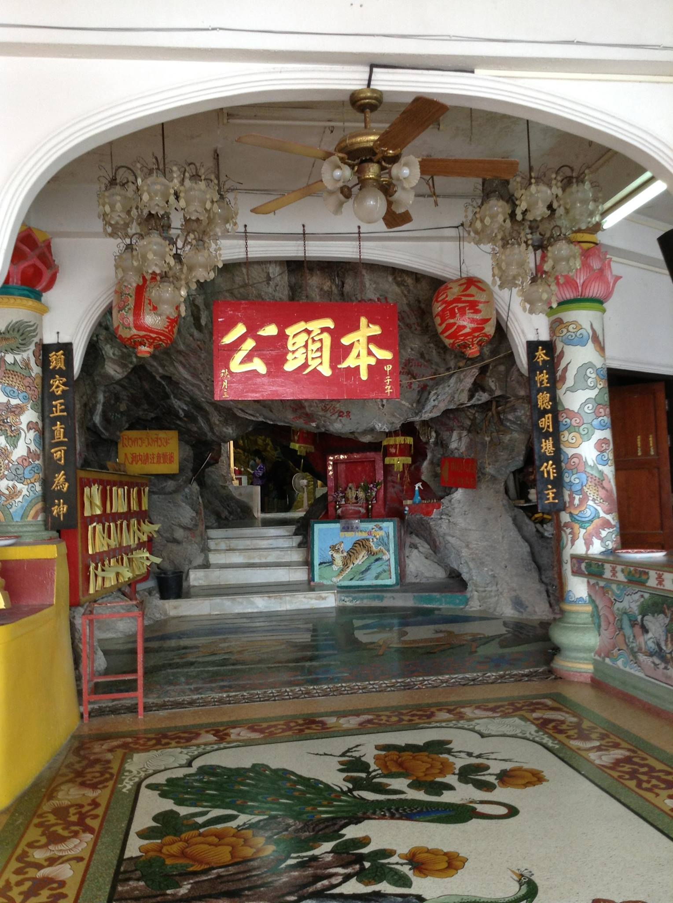
 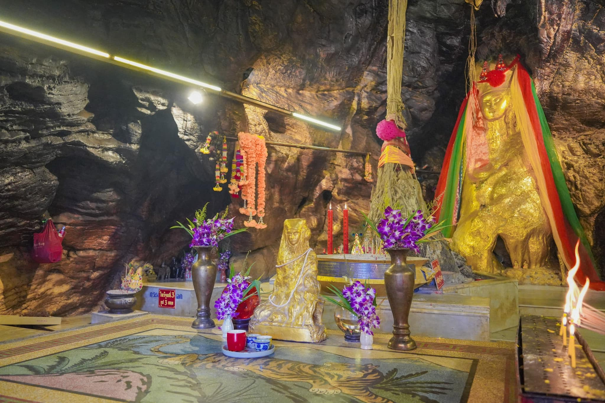
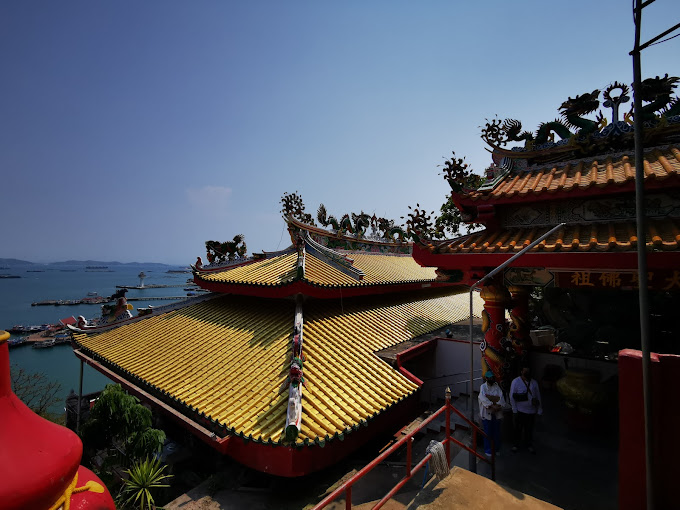
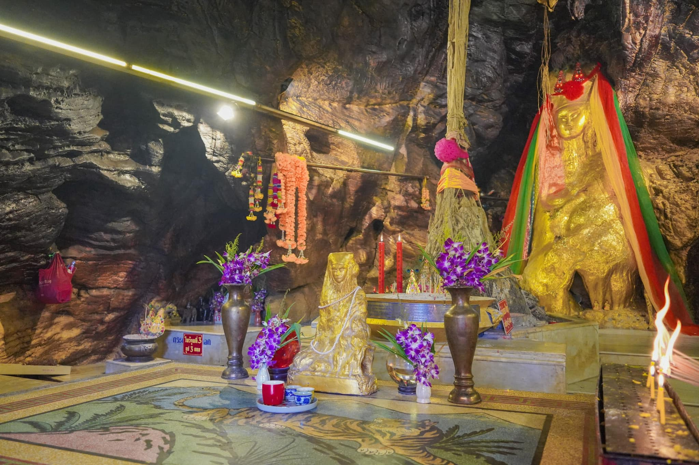
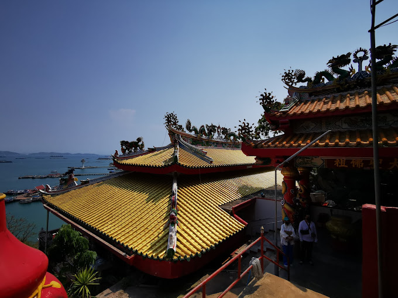